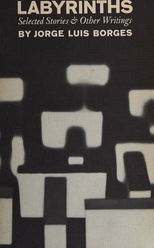

Do you ever feel like you are not quite there yet?
Will I finally reach this stage of euphoria and satisfaction if I do x, y, and then all the time in the world?
I just need to find the correct productivity system, stop procrastination, and then I will get there...
Every time I finish something, there is the feeling of "Oh, I can do one more thing."
By getting things done, am I creating more things to be done with?
All doing as a result of the fear for the future, instrumentalizing time, systemizing my existence, for the feeling of control over the uncertainty of life.
Perhaps, there is nothing wrong with having some uncertainty.
While having some certainty is good, planning my entire daily routine around productivity might not be the best approach.
I do not want my days to be merely a pathological quest to do more and more, as an act of escape, by putting off on having to be in the present, without ever asking myself whether I am on the right track or not.
I no longer should manifest in the bottomless bucket list; go to all the places my friends have been to, getting five internships before I graduate, etc.
Even the best life we could imagine will be one of waving goodbyes to endless possibilities of what you could have done, and that is okay as long as the process is cherished.
Life itself will end, and time spent with others will feel more real and meaningful the more time is shared.
By accepting my limitations, meaningful decisions that go beyond getting everything done will begin to cultivate patience. We start to accept that a life devoid of problems is not much of a life at all.
The day of no more problems will never come, and we must appreciate the process and limited control we have.
All you can do is live in the present.
Even if you plan for a far-ahead future, you will never feel prepared.
Stop waiting for the right moment and look at what you have done. Your life is now, and what can you do to make the most out of the time left? Not for society, but for yourself, your life.
"The more firmly you believe it ought to be possible to find time for everything, the less pressure you'll feel to ask whether any given activity is the best use for a portion of your time."
— Oliver Burkeman, *Four Thousand Weeks: Time and How to Use It*
"Time is the substance I am made of. Time is a river which sweeps me along, but I am a river; it is a tiger which destroys me, but I am the tiger; it is a fire which consumes me, but I am the fire."
— Jorge Luis Borges, *Labyrinths: Selected Stories & Other Writings*